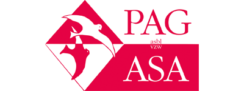
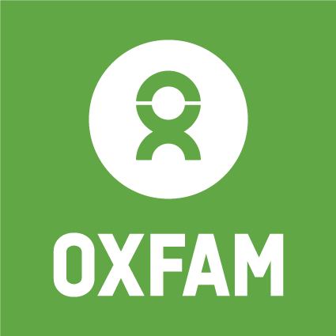
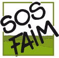
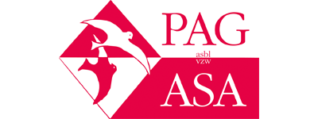
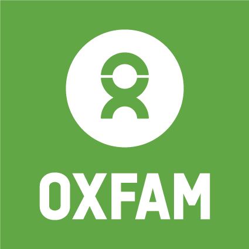
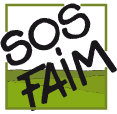

Avec votre don, vous soutenez des organisations sociales en Afrique, Asie et Amérique latine dans leur lutte pour : une pension pour les plus âgés des soins de santé abordables et accessibles pour tous un enseignement de qualité et du travail pour tous les jeunes un meilleur salaire et du travail dans des bâtiments sûrs pour tous les travailleurs l’égalité entre hommes et femmes
PAG-ASA est un centre d'accueil pour victimes de la traite des êtres humains en Belgique. Depuis notre création en 1994, l’association a accueilli plus de 1.400 victimes. Notre équipe de 20 travailleurs et 15 bénévoles leur offre un accueil sécurisé, et un accompagnement psychosocial et juridique. En outre, PAG-ASA participe activement à la lutte contre la traite des êtres humains au niveau national et international.
Pour Oxfam-Solidarité et ses partenaires du Sud et du Nord, un autre monde est avant tout une question de droits : chaque être humain doit pouvoir jouir sans contraintes de droits sociaux, économiques et culturels élémentaires.
Face à l’enjeu planétaire de devoir nourrir 9 milliards de personnes à l’horizon 2050, SOS Faim concentre plus que jamais ses efforts sur les exploitations agricoles familiales capables de générer des revenus, de gérer des territoires, de préserver les ressources naturelles et de lutter contre la faim.